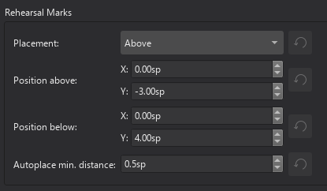

排练标记
概述
排练标记（有时称为排练字母）可以多种方式使用。例如：
- 标识乐谱中的特定点，以便于排练。
- 作为乐谱中的书签，你可以使用查找/搜索命令立即导航到这些书签。
- 标记乐谱中的各个部分。
排练标记是一种系统文本。在完整乐谱中，它们只显示在系统的顶部谱表上方，但会出现在所有乐器分谱中。
排练标记可以通过两种方式添加到乐谱：(1) 手动，允许你随意命名它们；或 (2) 自动，这确保它们按顺序命名。
向乐谱添加排练标记
手动放置和命名
要手动创建排练标记并赋予它你自己选择的名字：
- 在所需位置单击一个音符（或休止符）；
- 选择以下选项之一： * 按 Ctrl+M（Mac：Cmd+M）； * 从菜单中选择 添加→文本→排练标记；
- 输入所需的文本。
自动放置和命名
MuseScore 可以自动命名排练标记。执行以下任一操作：
- 在所需位置单击一个音符（或休止符），然后在"文本"面板中单击 [B1] 排练标记图标
- 将排练标记从"文本"面板拖放到乐谱上。
注意：(1) 默认情况下，标记按 A、B、C 等顺序添加。(2) 要更改后续添加标记的格式（改为小写字母或数字），请相应地编辑前一个排练标记。(3) 在已有排练标记之间添加的标记会在前一个标记后追加数字或字母：之后最好应用重新排序命令（见下文）。
在排练标记中使用小节编号
如果你希望排练标记显示为小节编号：
- 添加第一个排练标记，然后将其编辑为与其所附着小节编号相同的内容；
- 按自动放置和命名（上文）所示添加后续标记。它们将自动采用小节编号格式。
重新排序排练标记
如果一系列排练标记因任何原因变得顺序混乱，MuseScore 允许用户自动重新排列它们。使用以下方法：
- 在进行选择之前，如果需要，你可以通过手动更改范围内第一个标记来为排练标记建立新格式（小写/大写、数字或小节编号）。
- 选择你希望应用重新排序命令的小节范围（如果没有选择，则程序假定你希望对所有小节重新排序）。
- 从菜单中选择 工具→重新排序排练标记。
MuseScore 会根据选区中的第一个排练标记自动检测序列——选区中的所有排练标记随后都会相应更改。可能的序列如下：
- A、B、C 等
- a、b、c 等
- 数字：1、2、3 等
- 数字：根据小节编号。
查找排练标记
请参阅查找/转到（导航你的乐谱）。
在其他谱表上重复排练标记
在大多数完整乐谱中，任何排练标记只显示在系统最顶部谱表的上方，但会出现在所有生成的乐器分谱中。如果需要在较低的谱表上重复标记，应将它们添加为谱表文本。
某些模板具有额外的功能，例如交响乐团或古典乐团，请参阅谱表文本和系统文本章节中的模板列表。在使用上述两个模板之一创建的新乐谱上，当你在顶部谱表上方创建排练标记时，会在弦乐组上方自动添加一个相同的标记。如果编辑任一实例，两者内容都会更新。如果删除任一实例，两者都会删除。
更改排练标记的外观
默认情况下，排练标记以大号粗体显示，包围在框架中，并对齐到小节起始小节线的中心。你可以从 格式→样式→文本样式编辑默认文本属性。
排练标记属性
选中的排练标记的属性可以在属性面板中更改。
排练标记样式
请参阅模板和样式。
"排练标记样式"的值可以在 格式→样式→排练标记 中编辑。\ "排练标记内文本样式"的值可以在 格式→样式→文本样式→排练标记 中编辑

外部链接
- 排练字母（维基百科条目）